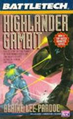
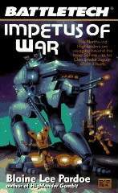
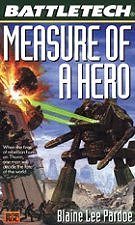
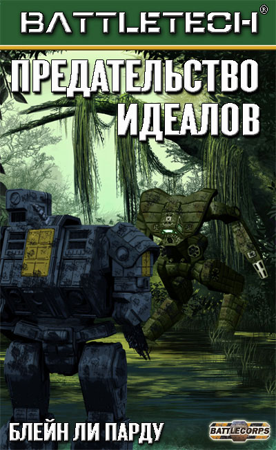

Блейн Ли Парду
Дорога Исхода
$5.99
Дорога Исхода - это путь, которым генерал Керенский и флот Исхода проследовали из Внутренней Сферы к родным планетам Кланов.
Блейн Ли Парду
Операция "Горец"
$9.99
Тридцать лет назад наемники-Горцы покинули Конфедерацию Капеллана, по сути предав тех, кто когда-то оказал им помощь и гостеприимство.
Блейн Ли Парду
Двойная игра
$4.99
Нортвиндские Горцы наняты Куритой, чтобы сделать вылазку на Периферию, захваченную кланами.Среди кланов же нет единства...
Блейн Ли Парду
Испытание героя
$7.99
Герой вернулся с войны, но затем война пришла к нему. Первый из романов об Арчере Кристифори - герое Гражданской Войны Федеративного Содружества.
Блейн Ли Парду
Предательство идеалов
$8.99
История развития Клана Росомах в период правления ИльХана Николая Керенского и Хана Сары Мак-Эведи. История развития других Кланов...
Блейн Ли Парду

Рев Чести
$9.99
Анжела Беккер - восходящая звезда в клане Призрачного Медведя. Посвященная долгу и чести, неустанная в достижении безупречной победы...